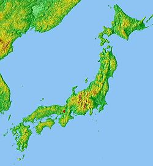

Kjóto

| Stát | Japonsko |
|---|---|
| Region | Kansai |
| Prefektura | Kyoto |
|  | |
| Rozloha | 827,90 km² |
| Počet obyvatel | 1 464 990 (2008) |
Ve zdejších ulicích se po staletí odehrávaly nejvýznamnější události japonských dějin. Atmosféra světa pravých samurajů je tady dodnes cítit na každém kroku
Kjóto patří mezi nejlépe dochovaná města Japonska s největším počtem památek zapsaných na Seznamu světového dědictví UNESCO. Historické místo s tisícovkou chrámů a stovkami svatyní je tak právem považováno za kulturní centrum země.
Po více než tisíc let plnilo Kjóto funkci hlavního města Japonska. Zažilo vrcholné období rozkvětu tradiční japonské kultury, stalo se místem s hojným výskytem tajuplných gejš a zdejší vládci, bohatá šlechta i duchovní si tu nechávali stavět nádherné chrámy, svatyně a paláce.
Dnes mohou cestovatelé v rozlehlém Kjótu obdivovat na 1500 buddhistických chrámů, 200 šintoistických svatyní, velké množství vyhlášených zahrad a mnoho dalších historicky cenných staveb. Celkem 17 objektů na území Kjóta bylo zapsáno na Seznam světového dědictví UNESCO.
Člověk by zde mohl strávit týdny, ba i dlouhé měsíce a stejně by nezvládl vidět vše, co město nabízí. Pokud máte na Kjóto vyhrazeno jen málo času, je třeba si návštěvu dobře naplánovat a prozkoumávat tuto starou císařskou metropoli v co největším možném klidu bez toho, abyste se snažili vidět za každou cenu co nejvíce zdejších památek.
Je téměř jisté, že stejně nezvládnete vidět vše, co jste měli v plánu. Zkuste si raději jednotlivá místa pořádně vychutnat, vnímejte jejich atmosféru a řiďte se heslem „méně je někdy více“.
Od roku 794 až do roku 1868 bylo Kjóto hlavním městem celé země. V roce 794 se císař Kammu rozhodl přestěhovat sem svůj dvůr z Nary a stanovil Kjóto sídelním městem japonských císařů. Tehdy město získalo název Heiankjó – metropole míru a klidu. Období od roku 794 až do roku 1192 se nazývá Heian a bývá označováno jako kjótský zlatý věk.
Císařský dvůr byl tehdy středobodem japonského vesmíru, město kulturně vzkvétalo, vznikaly honosné stavby a rozvíjelo se umění. Na konci 12. století pak většinu města zničil požár a nedlouho poté přešlo Kjóto pod správu vojenských vládců a samurajů.
Kjóto je velmi rozlehlé a turisticky nejatraktivnější místa jsou rozeseta po celém městě. Ze třech stran obklopují město hory a mnoho nejkrásnějších památek se nachází na jejich úpatí. Kjóto protíná metro, železniční síť a jezdí zde také městské autobusy. Ty jsou společně s taxi tím nejlepším dopravním prostředkem, který si můžete pro poznávání Kjóta zvolit, protože metrem ani vlakem se zdaleka všude nedostanete.
Několik společností v Kjótu provozuje turistické hop-on/hop-off autobusy, které vás zavezou přímo k těm nejzajímavějším památkám, a ušetří vám tak spoustu času oproti běžné městské hromadné dopravě. Nabídky těchto společností najdete přímo na kjótském hlavním vlakovém nádraží nebo v některém z městských infocenter.